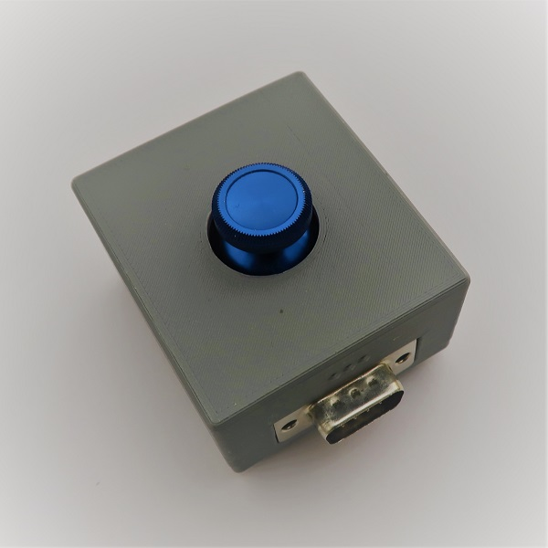
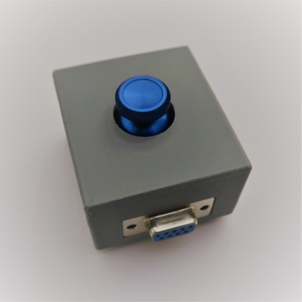
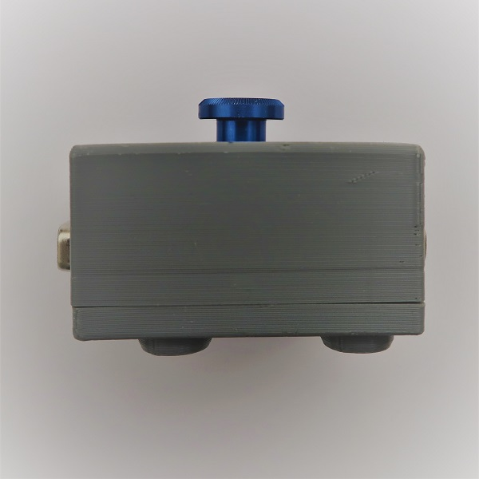
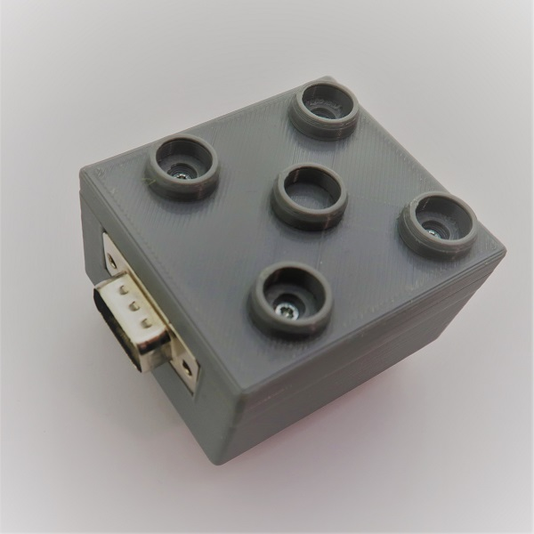
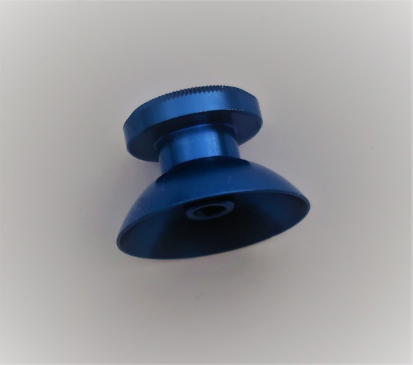
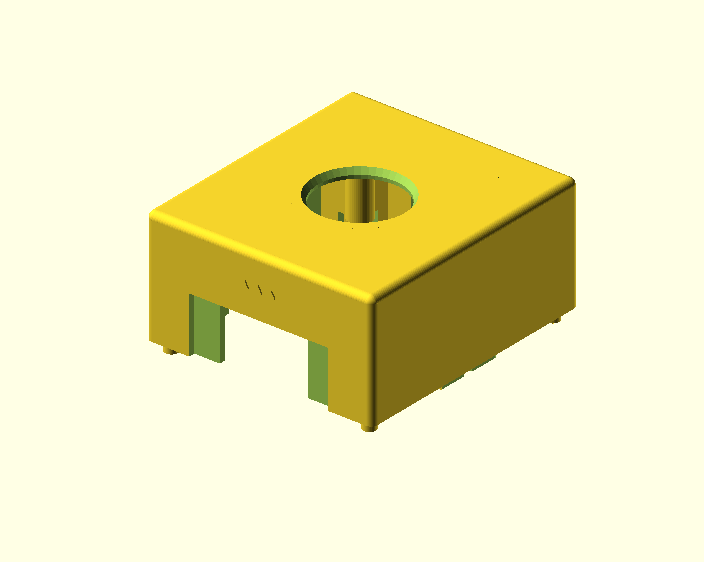
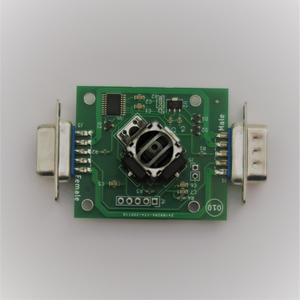

Joystick





Modul obsahuje jeden joystick, kteý otáčením generuje dva signály určených pro ovládání motorů. Když je zmáčknut joystick:
- Dopředu - signál X a Y je (+1, +1)
- Dozadu - signál X a Y je (-1, -1)
- Doprava - signál X a Y je (-1, +1)
- Doleva - signál X a Y je (+1, -1)
Modul generuje třetí signál - joystick je zmáčknut-není zmáčknut
- Joystick je zmáčknut (+1)
- Joystick není zmáčknut (0)
Návod k výrobě
Seznam součástek potřebných k vyrobení:
| Kategorie | Popis | Poznámka | Počet | Název | |
|---|---|---|---|---|---|
| 3D tisk |  | Krabička top | Tisk bez podpor | 1 | 010_4x4_joystick_top.stl |
| 3D tisk |

|
Krabička spodek | Tisk bez podpor | 1 | 000_4x4_BottomStandard.stl |
| 3D tisk |

|
Podpora pod PCB | Tisk bez podpor | 4 | 000_pcb_distance_washer.stl |
| Elektronika |  | Osazený plošný spoj s konektory, naprogramovaný | 1 | 010_4x4_joystick | |
| Spojovací materiál |

|
Šroub do plastu B2.5x16 | 4 | ||
| Ostatní | Hmatník | 1 |
Elektronika
Plošný spoj - schema